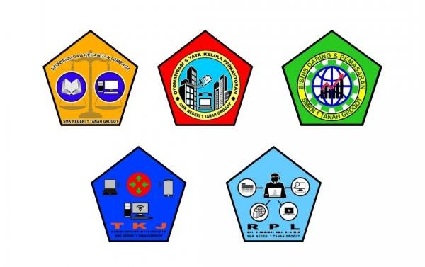

SMK Negeri 1 Tanah Grogot semula bernama SMEA Negeri 1 Tanah Grogot, yang mempunyai program keahlian Akuntansi, Perkantoran dan Manajemen Pemasaran yang berdiri Tahun 1991 yang terletak di Jalan Hos Cokroaminoto dengan mempunyai rombongan kelas belajar baru 3 (Tiga). Sejalan dengan perkembangan SMEA Negeri 1 Tanah Grogot berjalan cukup pesat terbukti dengan banyaknya alumni SMP yang berkeinginan menjadi siswa sekolah tersebut.
Secara De yure atau hukum peresmian SMEA Negeri 1 Tanah Grogot di laksanakan pada tanggal 19 September 1993 di Poltek Negeri Samarinda oleh Bapak Prof. Dr. Fuad Hasan (Waktu itu menjabat sebagai Menteri Pendidikan dan Kebudayaan Republik Indonesia) bersama sekolah kejuruan yang berada diwilayah Kaltim.
SMEA Negeri 1 Tanah Grogot di biayai oleh ADB (Asia Development Bank) dan seluruh Indonesia berjumlah 33 SMEA (Bisnis dan Manajemen) dan 7 (Tujuh) Sekolah Tehnik (STM baik Mesin maupun Pertanian). Hadir pada acara peresmian tersebut adalah:

Membekali peserta didik dengan pengetahuan dan keterampilan dalam bidang keahlian bisnis dan manajemen agar dapat bekerja dengan baik secara mandiri atau mengisi lowongan pekerjaan yang ada di dunia usaha dan industri sebagai tenaga kerja tingkat menengah, mendidik peserta agar mampu memilih karir, berkompetisi dan mengembangkan sikap profesional dalam bidang akuntansi.
Membekali peserta didik dengan pengetahuan dan keterampilan dalam berkomunikasi dengan baik secara lisan maupun tertulis dengan memperhatikan norma dan lingkungan kantor, kemampuan teknologi informasi untuk melaksanakan tugas secara efektif dan efisien, kemampuan merencanakan, melaksanakan, mengorganisasi dan mengevaluasi tugas yang menjadi tanggung jawabnya, kemampuan dalam mengelola surat sesuai SOP untuk mendukung tugas pokok lembaga, pelayanan terhadap relasi sehingga diperoleh manfaat masing-masing pihak, kemampuan mengelola administrasi keuangan.
Membekali peserta didik dengan pengetahuan dan keterampilan dalam menata produk, melakukan negosiasi, melakukan konfirmasi keputusan pelanggan, melakukan proses administrasi transaksi, mempersiapkan dan mengoperasikan peralatan transaksi dilokasi penjualan, melakukan penyerahan/pengiriman produk, menagih pembayaran, menemukan peluang baru dari pelanggan
Membekali peserta didik dengan pengetahuan dan keterampilan dalam menginstal perangkat komputer personal dan menginstal sistem operasi dan aplikasi, men
Membekali peserta didik dengan pengetahuan dan keterampilan dalam mengisntal perangkat komputer personal dan mengisntal sistem operasi dan aplikasi, membuat dan menerapkan aplikasi basisdata, membuat software berbasis desktop, membuat dan menggunkan aplikasi basisdata menggunakan bahasa pemrograman SQL serta mengintegrasikan dengan web, membuat dan merancang halaman web statis dan dinamis berbasis objek.
| NPSN : 30400114 | SK Pendirian Sekolah : 0216/O/1992 |
| Status : Negeri | Tanggal SK Pendirian : 1992-05-05 |
| Bentuk Pendidikan : SMK | SK Izin Operasional : 2393/I26.2a/Ie/1992 |
| Status Kepemilikan : Pemerintah Daerah | Tanggal SK Izin Operasional : 1992-06-03 |